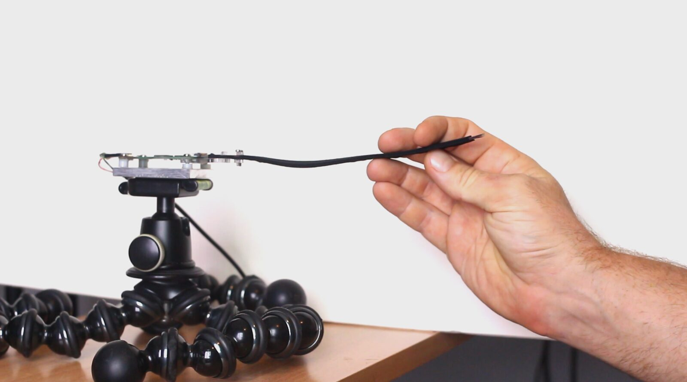
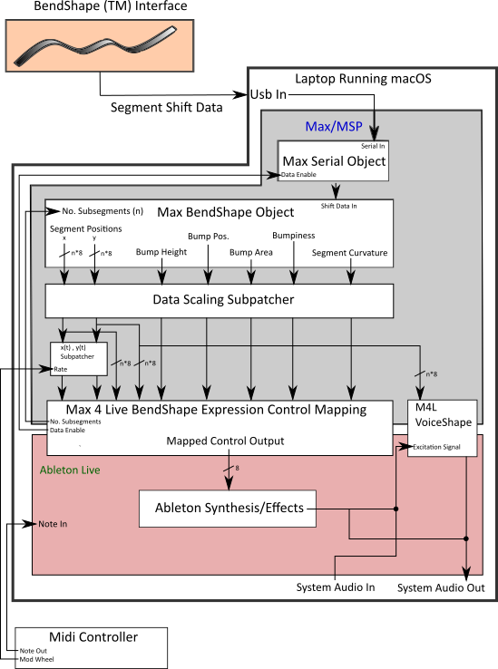
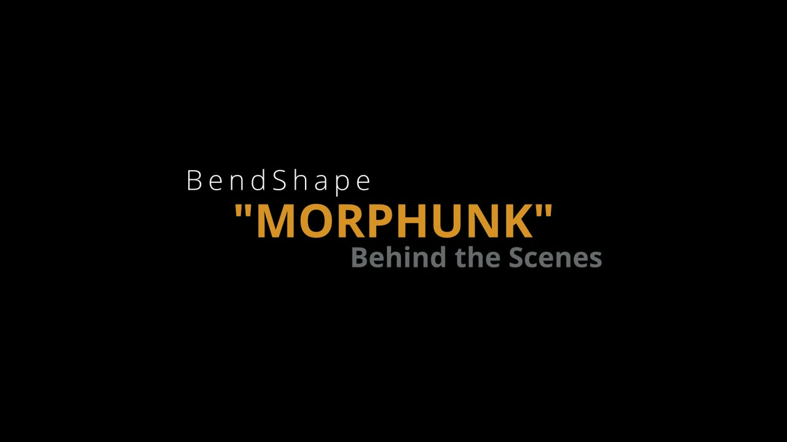
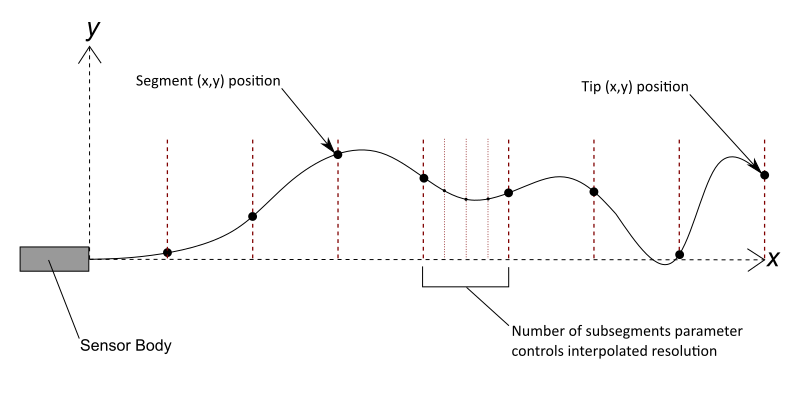
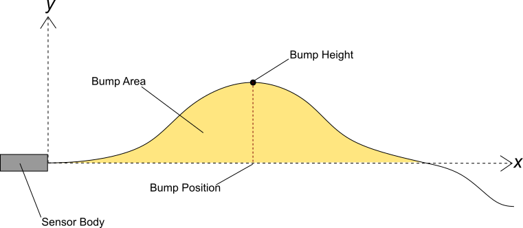
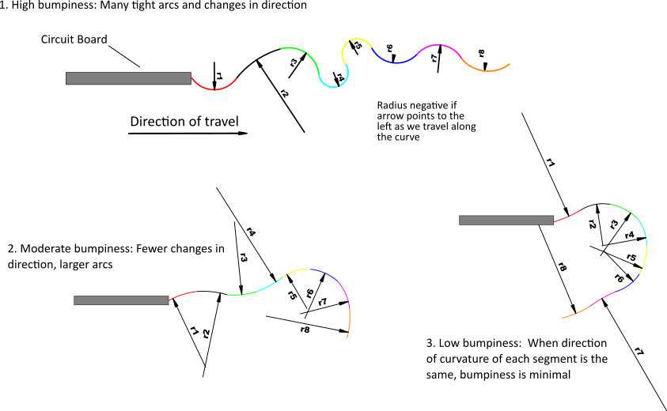
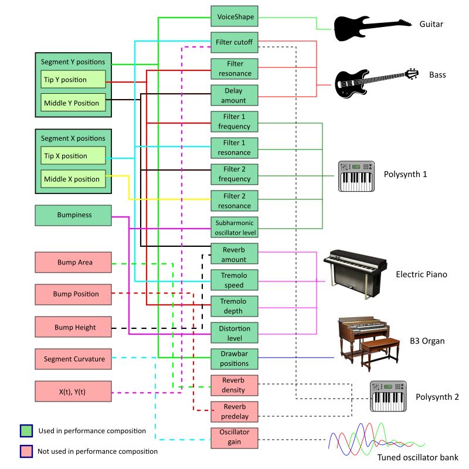
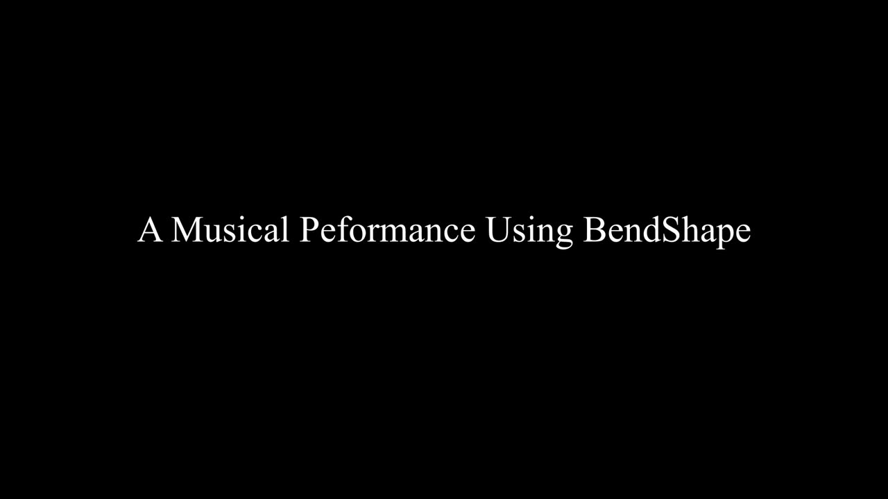

Investigation of a Novel Shape Sensor for Musical Expression
Abstract
A novel, high-fidelity, shape-sensing technology, BendShape [1], is investigated as an expressive music controller for sound effects, direct sound manipulation, and voice synthesis. Various approaches are considered for developing mapping strategies that create transparent metaphors to facilitate expression for both the performer and the audience. We explore strategies in the input, intermediate, and output mapping layers using a two-step approach guided by Perry’s Principles [2]. First, we use trial-and-error to establish simple mappings between single input parameter control and effects to identify promising directions for further study. Then, we compose a specific piece that supports different uses of the BendShape mappings in a performance context: this allows us to study a performer trying different types of expressive techniques, enabling us to analyse the role each mapping has in facilitating musical expression. We also investigate the effects these mapping strategies have on performer bandwidth. Our main finding is that the high fidelity of the novel BendShape sensor facilitates creating interpretable input representations to control sound representations, and thereby match interpretations that provide better expressive mappings, such as with vocal shape to vocal sound and bumpiness control; however, direct mappings of individual, independent sensor mappings to effects does not provide obvious advantages over simpler controls. Furthermore, while the BendShape sensor enables rich explorations for sound, the ability to find expressive interpretable shape-to-sound representations while respecting the performer’s bandwidth limitations (caused by having many coupled input degrees of freedom) remains a challenge and an opportunity.
Author Keywords
shape sensing, sound mapping interpretation, performer bandwidth, transparency
CCS Concepts
Human-centered computing → Sound-based input / output
Applied computing → Sound and music computing
Introduction
Bend sensors have a long history within the NIME community with some of the first explorations adapting resistive strain sensors [3] or fiber optics-based systems, such as Measurand’s ShapeTape [4], to estimate curvature. Unfortunately, inexpensive shape sensors are wildly imprecise and precision shape sensors are wildly expensive. Recently, Tactual Labs Co. developed BendShapeTM, a ShArc-based shape sensor that is both low cost and highly precise. This flexible strip sensor can be bent into complex, 2D curves. The shape of the curve is reported in real time as a series of eight tangent circular arcs which allows it to accurately describe shapes with multiple bumps. Full details on the design and performance of this sensor can be found in Shape Sensing Using the ShArc Technique [1].
The BendShape prototype is shown in Image 1 with some of the modifications we used in our study. Using this technology, we leveraged some well-established principles of creating NIMEs such as Perry’s principles [2] and notions of transparency [5] to explore different approaches to mapping shape to sound.


Image showing BendShape sensor and associated circuit board. The aluminum mounting bracket and tripod were added to allow the performer to use both hands on the sensor (or instrument).
After some initial mapping investigations, we refined our approach to study four use-cases of how a performer uses the controller, based on a real-world composition that we created. The use-cases are: 1. guitar modulator, 2. MIDI keyboard modulator, 3. direct sound controller and 4. pre-recorded sound manipulator. This paper makes the following contributions: i) a detailed description of a range of simple-to-complex shape characteristics that can be used as input and intermediate representations; ii) a rich analysis of a performer’s experience with different shape-to-sound mappings, iii) descriptions of tradeoffs when using shape-to-sound mappings, and; iv) an example implementation and performance that uses a range of shape mappings including a vocal-shape-to-vocal-sound instrument.
Related Work
We discuss some of the types of bend sensing technologies and what they have been used for which relate to this study. As well, some of the NIMEs that have been created are listed to illustrate the ongoing interest in using shape for sound manipulation, an interest that encourages our own exploration of some of the mapping challenges when using these types of sensors.
Bend Detection Sensors
A number of different methods exist for detecting bend [1], including resistive strain sensors [6], fiber-optics [7], and orientation using gyroscopic sensors [8]. The challenges with these range from sensitivity to heat, to non-linear response, to sensing cross-talk, to issues of robustness. Likewise, while seemingly intuitive, bend sensors have mostly been measuring 2D deformation along a one dimensional substrate. Thus, the interaction semantics need to be interpreted to be useful. For example, in Balakrishnan’s exploration of ShapeTape [9] different substrates were explored that allowed a manipulated curve to keep its shape, as well as to return to its original form. Additionally, interpretations of shape such as lofting, revolving, and extruding were developed to add meaning to the manipulations for creating curves in a graphical application. They noted in their work that the ShapeTape they used required higher precision sensing, and that new types of constraints and constructs in 3D modelling would be needed to make these types of devices useful. The BendShape sensor we use in this study overcomes the technical limitations of the type of bend sensing used in their work, and thus it lays the foundation for our exploration.
NIMEs Using Bend or Shape Sensing Technology
A number of NIMEs have appeared that seek to exploit the unique characteristics of bend sensing. Intuitively, humans are able to manipulate their hands and bodies into different configurations in order to shape material like clay, cloth, and wire. As a result, linking these types of actions and activities to different types of sound control seems natural. Exploration for linear bend sensing in NIMEs include: Squiggle [10], WaveSaw [11], Sonic Banana [3], Sonik Spring [12], PerForm [13], LINEform [14], and G-Spring [15]. Other NIMEs have looked at different notions of shape that involve deformation of a surface or object [16] [17][18]. Each of these approaches has focused on a particular use-case of bend sensing that maps to sound, whereas we are looking to investigate a number of different mapping types to see which are directions for creating NIMEs. WaveSaw and Squiggle both use notions of shape of a flexible strip for gestural mapping, and thus are similar in form factor to BendShape. WaveSaw approximates the shape of a flexible interface using flex sensors, and maps it to spectral filters and to wavetable synthesis. The authors conclude that while timbral gestures are supported, controlling pitch and dynamics is difficult. Further, the flex sensors used suffered from high failure rates. Similarly, Squiggle maps sensor shape and physical rotation to inputs of a 3D wave table. The authors note interdependency of timbre, pitch and dynamics as notable results, but do not comment on transparency, gestural metaphors, or performance context. Sonic Banana maps multiple single-point bend sensors to MIDI control values, resulting a layered mapping strategy that focuses on multichannel MIDI control. Though shape is loosely associated to the devised mapping metaphor, it is more of a byproduct of the design than it is an influential design choice. Sonik Spring relies on gestural notions of shape such as twisting and bending, though the complexity of shape is quite limited due to the design of the instrument. Other NIMES explore bend or strain sensors to detect hand and finger movement [19][20]. However, we did not find these to be relevant to our exploration in how we can relate shape to sound.
Mapping Strategies
There have been numerous studies that explore mapping of effects and sound control, such as [5][21][22][23][24]. The various studies by Hunt et al provide one of the key insights we used to determine the different mapping strategies we tested for BendShape. In particular, for raw sensor values the BendShape parameters are individual samples of the curvature at each of eight segments of the bend material. Mapping directly from these is an obvious input strategy, but as Hunt et al’s work suggests, often these simple mappings are not as expressive as more complex mappings. Furthermore, given the connected nature of a strip shape sensor, it is physically challenging to manipulate curvature of each segment independently. To overcome this, different intermediate mappings can be created to provide interpretation of the actuation of the BendSensor and thus provide meaningful relations. From Fels and Gadd, these interpretable mappings may be suitable for improving transparency since they can be designed explicitly.
Methodology
Since our research question targeted appropriate strategies for creating expressive control using the BendShape sensor prototype, we used a two-step process: 1) an initial trial and error approach for simple mappings followed by 2) composing a piece with multiple layers of different instruments to allow a performer to experience different mapping techniques. We chose to compose a piece based on Perry’s Principle of ‘Make a Performance Piece, Not an Instrument or Controller’ so that the experience of the performer is in context. The experience of the performer is then used to develop a subjective description of the expressive potential of each strategy. Finally, we look specifically at a vocal tract shape metaphor based on the notion that metaphor provides an effective mechanism to create audience and performer transparency [5].
The ShapleySound System
For our investigations we created a system, called ShapleySound, in which we modified the BendShape sensor’s frame by adding brackets and a tripod so that the sensor could be anchored to the ground or objects as shown in Image 1. This enabled performers to work with the device without having to hold it. The output from the sensor was read into a computer where the different mappings for different sound control were explored as part of performances. The overall configuration is shown in Image 2.


Block diagram of ShapleySound showing the BendShape sensor, Max/MSP patchers, expression control and VoiceShape Max4Live objects, and MIDI controller inputs.
The BendShape Sensor
The BendShape sensor prototype (shown in Image 1) consists of a flexible strip measuring approximately 160mm long, 12mm wide and 2mm thick, and is comprised of multiple layers of flexible circuit board material bound together by a spandex sheath. The sensor is highly flexible, and produces little resistance to being bent and has no shape memory. It is divided into eight equal segments that detect the amount of shift between the outermost layers. From this data, the shape is modelled as series of eight circular arcs that are tangent at their connections. In the prototype version, a 24-bit capacitance-to-digital convertor is used, but the overall accuracy of the sensor is practically limited my mechanical considerations as extensively characterized in [1]. The strips connect on one end to a small circuit board that has a USB interface while the other end is free so the strips slide over each other. Our 8 segment prototype runs at 10Hz, but newer versions currently in development run at 150Hz with 16 segments. The relatively low sample rate of our prototype was a limitation resulting in a minimum of ~100ms latency; significantly above the threshold that is perceivable by a performer. Despite this, we were able to control a wide range of effects once the performer understood the limitations of the prototype. We were also limited to one sensor for our research due to availability of prototypes. Future versions of the BendShape sensor expect to be available in larger numbers with lower latency and faster sample times.
To hold BendShape securely we fabricated an aluminum mounting plate and attached it to the sensor’s circuit board as shown in Image 1 which could be attached to a tripod (shown in Image 1). This configuration allowed the performer to mount the sensor to a microphone stand, keyboard stand, or anywhere convenient for them to simultaneously play their instrument and manipulate the sensor. We defined the base of the sensor attachment as the origin (Image 3). We considered connecting the sensor to the performer’s finger, but it was determined that such a configuration would reduce the degrees of freedom of the sensor, and has already been explored using existing bend sensors. To focus on exploring the use of shape to control music, we decided against constraining the sensor’s strip by mounting it to a simpler mechanism.
We considered adding shape memory to the sensor by using a strip of thin annealed copper on each side of the sensor. However, the added stiffness of the copper strips limited the complexity of and speed that shapes could be produced.
Software Interface
Max/MSP was used to collect and process data, to create a vocal synthesis engine (VoiceShape), and to create a mapping interface that could be integrated with Ableton Live using Max for Live (M4L). Live was used for recording audio, as well as for generating effects and sounds to be controlled by BendShape .
VoiceShape provides as 1D acoustic model of a vocal tract for synthesis. We coded it as a Max/MSP external using the /voc module from Paul Batchelor’s SoundPipe library [25], which is an implementation of Pink Trombone [26] written in C. We built a M4L patch to enable control all of the vocal synthesis parameters, including tongue shape, within the Live environment. Likewise, a Max/MSP M4L mapping interface was then built to easily provide control mapping from ShapleySound to Live (Image 2). Video 1 demonstrates how to use the system to map and control different effects using BendShape.

▶How the BendShape Sensor Interacts with the ShapelySound system
Initial Mapping Explorations
In order to use BendShape as an expressive controller successfully, we considered transparency as a key element in our design [5]. For our assessment, the performer’s subjective assessment of transparency is used as a predictor for expressivity, where controller mappings with the highest levels of transparency for both the audience and performer lead to the highest levels of expression. A more complex analysis of expressiveness requires more research in assessment of transparency, intimacy and intermediate mapping layers, and how they allow a general control of expression. Structuring our mapping into input, intermediate, and output layers allowed us flexibility in configuring each layer to investigate different mapping metaphors. In our investigations, input mappings refer to interpretations of the physical shape of the controller, intermediate mappings refer to how we mathematically parameterize input mappings, and output mappings refer to how we map intermediate layer data to the inputs of a computer instrument or effect.
Input Mapping
The first step in devising mappings required finding different ways to interpret the sensor’s shape. Our input mapping consists of representations that are either concrete geometric representations (eg: coordinates of sensor segments, Image 3), or conceptual representations, such as bumpiness (Image 4) or tongue shape. These representations are then mathematically interpreted and parameterized by the intermediate mapping layer as shown in Table 1. When designing these layers, we considered abstract representations, such as Bezier control points derived from the sensor values, but found that these were too difficult for the performers to understand control-wise.
Table1: BendShape Input and Intermediate Mapping Layer Relationships
Input Layer Parameter | Intermediate Interpretation |
|---|---|
Sensor position coordinates | The x,y starting position of each segment of the sensor. The segment arcs can be subsampled to provide higher resolution. This is controlled by the number of subsegments parameter |
Tip position | The x,y position of the tip of the sensor |
Bump position | The x coordinate of the sensor’s highest point |
Bump height | The y coordinate of the sensor’s highest point |
Bump Area | The area under the curve created by the sensor above the positive y axis, calculated using the rectangular approximation method. |
Bumpiness | The variance of the curvature between each change in direction of curvature, multiplied by how many times the curvature changes direction |
x(t), y(t) | The x and y positions of the sensor as we iterate along each sensor segment at a predetermined time interval |
Tongue Shape | The cylindrical diameters of the Kelly-Lochbaum vocal tract model represented as the y-positions of sensor segments |
Intermediate Layer Mapping
Our intermediate layer is based on the mathematical interpretation, parameterization, and scaling of the input mappings as shown in the right column of Table 1. Since BendShape outputs eight long integers that represent shift data for each segment, we process this data to represent our desired input mapping, as well as provide a predictable, scaled output to control instruments and effects. Intermediate layer processing is handled by Max/MSP, shown as the grey region of Image 2. Image 4 shows how a bump parameter data is interpreted, Image 5 shows how bumpiness is interpreted with bumpiness calculated using:


Graphic of ShapleySound’s shape represented by the Cartesian coordinates of the starting positions of each segment.


Bump area height (y-position) and position (x-position). Only positive area under the curve (above x-axis) is used to calculate bump area.


Bumpiness is calculated by the product of the variance of the curvature across each segment and the number of changes in direction of curvature. Curvature is calculated as 1/r.
Output Layer Mapping
Determining output mappings from the intermediate layer data to the desired instrument or effect control input is the final step in the mapping process. The M4L Expression Control Mapping object can map up to eight different intermediate layer properties to any instrument or effect control in Live. This design permits great flexibility in experimenting with different mappings, which was a priority for allowing the performer to change mappings easily and quickly while composing the performance piece. Image 6 shows mappings between intermediate and output layers that were explored, and used in the performance.


Mapping diagram between BendShape parameters, input parameters and instruments both explored and used in performance piece.
Performance-Based Explorations
Our approach for this investigation was to first compose a piece of music and then to try a number of different mapping strategies in performing the piece. The piece included sections where different instruments played lead, with the appropriate mapping for ShapleySound to be used to modulate the lead instrument’s sound. This approach allowed us to compare mappings in the context of the same piece.
Composition Considerations
To effectively demonstrate BendShape ’s potential for expressive control, we identified different criteria that would lead to a strong performance for both the audience and performer: BendShape should modulate a variety of instruments that have distinct timbres, the arrangement should have a thin enough texture that modulations are not masked by other instruments, the genre of music should be familiar to the performer so they can quickly and easily compose/improvise each part, the genre should be accessible and familiar to a wide audience, and each section of the composition should feature a lead instrument being modulated by BendShape. In order to maximize transparency for the performer and audience, it was decided to create a contemporary pop music piece with a consistent beat that incorporated elements of funk and rock music. The instrumentation consisted of bass guitar, electric piano, electric guitar, Hammond organ, drums, and a synthetic horn section. This instrumentation was chosen because a large number of popular music listeners are familiar with their sound, and will be able to more easily detect the changes in sound through the modulation of effects. The composition was structured in four sections, where bass guitar, electric piano, organ, and guitar were modulated . Video 2 shows the piece being played.

▶Video 2: Video of performance of piece used for assessing different mappings in context.
Video 2: Link to video for review.
Initial Investigation: Performer Practice Sessions and Evaluation
Before composing any music, a trial-and-error approach was used to identify mappings that showed the most promise for expressivity. The lead musician met with a group of three peers in a weekly video conference meeting, where proposed input mappings from the previous week’s sessions were demonstrated and then qualified for their transparency of metaphor and effectiveness in modulating sound. When at least eight input mappings which showed strong potential for expressive control were identified (Table 1), the musician created a rough draft of a composition, which was then reviewed in the following weekly meeting. Once the group agreed on the composition and arrangement of the piece, the musician experimented with different modulations for the lead instrument in each section of the piece. These were once again presented to the group, where they commented on transparency and expressivity, and offered suggestions for improving both. This process was iterated a few more times until each group member was satisfied by the performance.
VoiceShape Mapping
Early on during the trial-and-error approach, the metaphor of using BendShape to represent tongue shape in a vocal tract model was identified as one of the strongest shape-to-sound metaphors, and thus was pursued further. This subsection identifies key design elements for using BendShape as a controller for the vocal tract model (VoiceShape) as it contained the most complex mappings we considered.
The VoiceShape Model
To provide a voice synthesis engine to be controlled by BendShape, we used a digital waveguide model that uses Paul Batchelor’s /voc module from the Soundpipe audio DSP Library, which is based on Pink Trombone [26]. It treats the vocal tract as a series of 44 adjacent cylinders whose diameters are controlled by 44 discrete input values. This was the basis of our VoiceShape Model.
Operation Modes of the Vocal Tract Model
The vocal tract model has multiple modes of operation: the user can select an internally generated excitation signal, or provide their own excitation signal as an audio input to the model. Using the internally generated signal, the user has the ability to control pitch, gain, tenseness (ratio of noise to pitched sound in the excitation signal), and velum (nasality). Using an externally generated excitation signal reduces the available control parameters to those of gain and velum.
The model also allows the user to select between "Tongue" and "Free" modes. In Free mode, the user controls the shape of the entire vocal tract using the 44 diameter values previously discussed. By dividing the sensor into 48 segments of equal length, we can use the y-position values of 44 of these segments to control the individual tract diameter inputs in Free mode. In Tongue mode, the vocal tract is partitioned into three different areas: throat, tongue and lip. Throat and lip diameters are each controlled by a single input, while tongue shape is controlled by 22 position values. By reducing the sensor resolution to 24 segments, we are able to use the entire length of the sensor to represent tongue shape.
Additional controls of a Vocal Tract Model
Additional controls for scaling the upper and lower bounds of tongue position, and minimum tongue position are provided. Scaling the bounds allows the user to fine tune the sensitivity of the control input’s effect on tongue position, as well as to bias the relative position of the tongue to be "higher" or "lower" in the vocal tract. Minimum tongue position allows the user to fine tune the smallest value for all tongue positions, which is primarily used for changing the intensity of glottal stops (heard as clicks when generated by the model) when any tongue position value approaches zero.
Results and Discussion
Physical Coupling of Input Mapping
Though the data generated by BendShape represents a series of independent tangential circular arcs, the sensor’s physical properties enforce strong coupling. Hence, while segment curvatures are independent, any positional changes in one area of the sensor can affect segment positions in the rest of the sensor. This differentiates BendShape from a bank of sliders which offer discrete control. The only input mapping parameter we explored that was completely de-coupled from the shape of the rest of the sensor was the tip x/y position. However, creating layers of multiple mappings to support simultaneous control of a number of parameters provides different types of coupling for different mappings. For example, if we map bump height to reverberation depth, and bumpiness to distortion, coupling would occur. This coupling generally made the sensor harder to use, and required some amount of learning by the performer. Related to observations by [21], the complex coupling, while making the sound harder to control, made the interface feel like an expressive instrument instead of modulator.
Mapping Transparency
The musician practiced the piece over four weeks and recorded his observations to compare the different mappings characteristics. As well, the three peers (authors on paper) used during the trial-and-error phase also listened to the performance piece intermittently as the composition came together and provided feedback as to the level of transparency of the mappings. The composition was adjusted towards making each mapping as transparent as possible to try to maximize expression for each mapping.
Transparency Implications of Input-Intermediate-Output Mappings
Evaluating which input mappings were the most effective depended on their interpretability to both the audience and the performer. Mappings that were concrete, such as sensor segment position or bump parameters were immediately interpretable. Input mappings such as bumpiness and tongue shape were not immediately apparent and required some level of familiarity by the performer and audience to achieve interpretability. This interpretability was crucial to mapping transparency: if the performer or audience cannot visualize the physical properties of any given input mapping, they will have difficulty in understanding how it modulates the sound of the performance.
Transparency of Explored Mappings
Oscillator: In order to explore mappings that generated sound, we mapped the amplitude of a number of oscillators to the curvature of each of the sensor’s segments. The oscillator frequencies were tuned to the notes of a major scale to improve the musicality of the sound generated. This mapping proved to be quite inexpressive due to very low levels of transparency for the performer and audience: the performer needed to keep track of eight different curvatures along a relatively small strip, and control them in a way that provided repeatable, consistent results, while the audience needed to perceive some kind of meaning from a random sounding output and an arbitrary sensor shape. Even though the performer had 100% of their bandwidth dedicated to manipulating the sensor, the mapping metaphor was nowhere near transparent enough to be expressive.
Piano and guitar: The layered mapping approach used for the electric piano and bass guitar tracks of our performance piece, as shown in Image 6, was identified as having adequate transparency to the performer, and allowed for a very expressive combination of mappings of varying complexity. Although the issue of coupling was present, in this configuration the individual mappings could be controlled with some degree of independence from the others. This allowed the user to combine modulations in interesting and expressive ways that would be difficult with a bank of sliders or knobs. As the audience was not aware of the mapping configuration initially, the layered mapping transparency was not as high for them as it was for the performer. However, once the mapping was explained, the audience noted that their levels of transparency had improved.
Organ: The mapping approach used for the organ, shown in Image 6 was adequately transparent for the performer, who understands the effect of drawbar positions on the sound of an organ. However, it was less transparent for the audience. The highly coupled nature of this mapping strategy required drastic changes in sensor shape to provide a significant variation in drawbar position, as moving one segment on the sensor had an effect on all the others. The effect on the sound of the organ was more subtle than the other mappings explored, which could indicate why the audience noted issues with transparency.
VoiceShape: Both the audience and performer noted that the tongue shape metaphor resulted in the highest perceived levels of transparency.
Unused Mappings: Image 6 indicates that some input mapping parameters were not used in the composition. These mappings are worthy of exploration in a performance piece, but were omitted due to time restrictions in creating the work, types of effects used, and stronger levels of expressivity and transparency in chosen mappings.
Effects on Performer Bandwidth
Challenge of one-handed manipulation: The effect on performer bandwidth while one instrument while trying to manipulate the BendShape sensor was quite significant. For example, trying to manipulate bumpiness with one hand severely limited the variations possible while at the same time trying to play a MIDI keyboard, or play guitar. In the case of guitar, the performer tried left hand legato/hammering on, making notes sustain long enough that they could manipulate shape and strategies to play notes one handedly. Ultimately, as a modulator, one handed play required the performer to focus more of their attention on the shape of the sensor, which took away bandwidth allocated to playing the keyboard.
Two-handed operation allowed for the greatest level of expressivity when controlling effects on a pre-recorded audio track. Since all of the performer’s bandwidth was allocated to the sensor, we were able to combine multiple input mapping metaphors that could be modulated simultaneously. Using two-handed control also suggests the possibility of collaboratively controlled sound control.
Effect of Controlling a Vocal Tract Model on Bandwidth
Since effective use of BendShape to control the vocal tract model requires both hands, manipulating it while playing guitar and a MIDI keyboard presents the same bandwidth limitation issues discussed in last section. Furthermore, to cause a significant change in sound generated by the vocal tract model, smaller and more subtle movements of the sensor were required similar to how real tongue movements impact speech. Fine-tuning of the max/min scaling of tract segment diameters became instrumental for playability. We also found a median fixed lip and small throat diameter allowed for the production of a larger range of sounds when changing tongue shape. The ability to control both throat and lip diameter on the fly would increase the user’s ability to reproduce more speech patterns (phonemes, vowel sounds, stops), but would require more bandwidth from the user. Foot pedals or linear soft potentiometers could be suitable interfaces for these controls as well.
Effect of VoiceShape excitation mode on bandwidth
Internal excitation: when using an internal excitation signal, the sound produced by the model is continuous, and the user must control both pitch and volume in real time in conjunction with the tongue shape, lip, and throat diameters as discussed above. One prototype we tried had a gyroscopic sensor to detect the orientation of the controller so that tilting the whole sensor forward or backward controlled the pitch. Ultimately, this was a burden on the performer since they had to manipulate the whole apparatus in one hand for pitch.
External excitation: using an external excitation signal allowed more bandwidth devoted to shaping the vocal filter as the external excitation already had volume, pitch, consents and stops defined. The performer explored this during the performance by shaping a pre-recorded guitar track which ended up being very close to a talk-box effect and was quite expressive.
Other VoiceShape Observations
The performer documented additional limitations and advantages of free mode and tongue mode when using the VoiceShape mapping.
Free Mode: two main issues arose free mode: 1) difficulty controlling the entire vocal tract and 2) limitations with the vocal tract representation. For the former, it was difficult for the user to mentally partition the sensor into three zones (throat, tongue, lip) of control which are coupled. For the latter, the mapping was a poor analog of the vocal tract, since the tip of the sensor represented lip diameter, and not the position of the tip of the tongue. This created a counter-intuitive representation of the vocal tract, and any changes in lip diameter affected the tongue’s tip position and vice-versa.
Tongue Mode: Tongue mode proved to be more effective for vocal synthesis control in our system. Providing the user with independent controls for throat and lip diameters allowed them to focus on modulating the tongue shape with gestures that mimic human speech patterns. Though, it required a high level of bandwidth from the user, being able to control tongue shape and lip position independently improved the user’s ability to mimic a wider range of speech patterns. One subtle compromise with tongue mode comes from the y-position of each segment being based on a fixed x-position, which simplifies the tongue shape abstraction, but means moving the tip of the sensor in the x-direction does not affect the x-position of the tongue tip in the vocal tract model.
Conclusions
While composing and playing BendShape for the performance piece, the act of controlling effects became a performance in and of itself, which suggested that treating BendShape as its own instrument would achieve the highest levels of expressivity and transparency. While simultaneously controlling individual effect parameters did yield some interesting results, the advantage of using BendShape over simpler controllers was not apparent. However, when controlling multiple effects simultaneously, the coupling of the sensor segments afforded more control and expressivity than a bank of sliders. The high levels of transparency provided by using bumpiness and tongue shape as metaphors for sound suggests that further exploration in shape/sound relations using BendShape is warranted, specifically as a physical model controller. Furthermore, the sensitivity, and the large combinations of shape and gesture that can be realized with ShapleySound could benefit from a machine learning approach to help the performer achieve more consistent, predictable results for data driven metaphors and shape abstractions. Abstract notions of manipulating shape could be, "flicking", "whipping", "plucking" or other movements that describe how a human might interact with two-dimensional objects like a rope, a flat spring, or an instrument string.
Acknowledgments
We thank Ian Lavery for his contribution to the composition and performance work. We also thank Mahmoud Abuohagar, Sidd Bhattacherya, and Bojia Li for their work on the initial prototype of the VoiceShape system.
Ethical Standards
Funding provided by Tactual Labs Inc., Government of Canada Student Work Placement Program (Technation Career Ready Program), and the Social Sciences and Humanities Research Council (SSHRC). Paul Dietz was an employee of Tactual Labs Inc. during the project. The performer, Alex Champagne, is one of the authors for the study.
Citations
- ↩Shahmiri, F., & Dietz, P. H. (2020). Shape sensing using the sharc technique. In Extended abstracts of the 2020 chi conference on human factors in computing systems (pp. 1–4). New York, NY, USA: Association for Computing Machinery. https://doi.org/10.1145/3334480.3383166
- ↩Cook, P. (2001). Principles for Designing Computer Music Controllers. In Proceedings of the 2001 Conference on New Interfaces for Musical Expression (pp. 1–4). Seattle, Washington.
- ↩Singer, E. (2003). Sonic Banana: A Novel Bend-Sensor-Based MIDI Controller. In Proceedings of the 2003 Conference on New Interfaces for Musical Expression (pp. 220–221). Montreal, Quebec, Canada: National University of Singapore.
- ↩Sheehan, B. (2004). The Squiggle: A Digital Musical Instrument. In Proceedings of the 2004 Conference on New Interfaces for Musical Expression (pp. 92–95). Hamamatsu, Shizuoka, Japan.
- ↩Fels, S., Gadd, A., & Mulder, A. (2002). Mapping transparency through metaphor: Towards more expressive musical instruments. Organised Sound, 7(2), 109–126.
- ↩Pancheri, L., Guo, C., Wu, C., Wang, B., & Liu, H. (2017). A Two-Dimensional Deflection Sensor Based on Force Sensing Resistors. Journal of Sensors, 2017, 1241280. https://doi.org/10.1155/2017/1241280
- ↩Kim, B., Ha, J., Park, F. C., & Dupont, P. E. (2014). Optimizing curvature sensor placement for fast, accurate shape sensing of continuum robots. In 2014 ieee international conference on robotics and automation (icra) (pp. 5374–5379). https://doi.org/10.1109/ICRA.2014.6907649
- ↩Dementyev, A., Kao, H.-L. (Cindy), & Paradiso, J. A. (2015). SensorTape: Modular and Programmable 3D-Aware Dense Sensor Network on a Tape. In Proceedings of the 28th Annual ACM Symposium on User Interface Software & Technology (pp. 649–658). Charlotte, NC, USA: Association for Computing Machinery. https://doi.org/10.1145/2807442.2807507
- ↩Balakrishnan, R., Fitzmaurice, G., Kurtenbach, G., & Singh, K. (1999). Exploring Interactive Curve and Surface Manipulation Using a Bend and Twist Sensitive Input Strip. In Proceedings of the 1999 Symposium on Interactive 3D Graphics (pp. 111–118). Atlanta, Georgia, USA: Association for Computing Machinery. https://doi.org/10.1145/300523.300536
- ↩Sheehan, B. (2004). The Squiggle: A Digital Musical Instrument. In Proceedings of the 2004 Conference on New Interfaces for Musical Expression (pp. 92–95). Hamamatsu, Shizuoka, Japan: National University of Singapore.
- ↩Dahl, L., Whetsell, N., & Van Stoecker, J. (2007). The WaveSaw: A Flexible Instrument for Direct Timbral Manipulation. In Proceedings of the 7th International Conference on New Interfaces for Musical Expression (pp. 270–272). New York, New York: Association for Computing Machinery. https://doi.org/10.1145/1279740.1279796
- ↩Henriques, T. (2012). Sonik Spring. In CHI ’12 Extended Abstracts on Human Factors in Computing Systems (pp. 1019–1022). Austin, Texas, USA: Association for Computing Machinery. https://doi.org/10.1145/2212776.2212375
- ↩Wicaksono, I., Rozendo, C., Ye, R., Trapp, J., Michael, B. Jr., V., Dagdeviren, C., & Ishii, H. (2018). PerForm: Deformable Interface for Exploring Sound through Shapes. In Extended Abstracts of the 2018 CHI Conference on Human Factors in Computing Systems (pp. 1–6). Montreal QC, Canada: Association for Computing Machinery. https://doi.org/10.1145/3170427.3188478
- ↩Nakagaki, K., Follmer, S., & Ishii, H. (2015). LineFORM: Actuated Curve Interfaces for Display, Interaction, and Constraint (pp. 333–339). https://doi.org/10.1145/2807442.2807452
- ↩Lebel, D., & Malloch, J. (2006). The G-Spring Controller. In Proceedings of the 2006 Conference on New Interfaces for Musical Expression (pp. 85–88). Paris, France: IRCAM — Centre Pompidou.
- ↩Vogt, F., Chen, T., Hoskinson, R., & Fels, S. (2004). A Malleable Surface Touch Interface. In ACM SIGGRAPH 2004 Sketches (p. 36). Los Angeles, California: Association for Computing Machinery. https://doi.org/10.1145/1186223.1186268
- ↩Marier, M. (2010). The Sponge A Flexible Interface. In Proceedings of the International Conference on New Interfaces for Musical Expression (pp. 356–359). Zenodo.
- ↩Boem, A. (2014). SCULPTON: A Malleable Tangible Interface for Sound Sculpting. In International Computer Music Conference (ICMC) (pp. 737–743).
- ↩Hayafuchi, K., & Suzuki, K. (2008). MusicGlove: A Wearable Musical Controller for Massive Media Library. In NIME.
- ↩S. S. Fels, & G. E. Hinton. (1997). Glove-talk II - a neural-network interface which maps gestures to parallel formant speech synthesizer controls. IEEE Transactions on Neural Networks, 8(5), 977–984. https://doi.org/10.1109/72.623199
- ↩Hunt, A., Wanderley, M. M., & Paradis, M. (2003). The importance of parameter mapping in electronic instrument design. Journal of New Music Research, 32(4), 429–440.
- ↩Hunt, A., & Wanderley, M. M. (2002). Mapping Performer Parameters to Synthesis Engines. Org. Sound, 7(2), 97–108. https://doi.org/10.1017/S1355771802002030
- ↩Hunt, A., Wanderley, M., & Kirk, R. (2000). Towards a Model for Instrumental Mapping in Expert Musical Interaction. In International Computer Music Conference (ICMC) (p. 4 pages).
- ↩Hunt, A., & Kirk, R. (2000). Mapping Strategies for Musical Performance. In M. M. Wanderley & M. Battier (Eds.) (pp. 231–258). IRCAM (Research institute : France), & Centre Georges Pompidou.
- ↩Batchelor, P. (2017). Voc, https://pbat.ch/proj/voc/. Retrieved from https://pbat.ch/proj/voc/
- ↩Thapen, N. (2017). Pink trombone, vrs 1.1, http://venuspatrol.nfshost.com, 2017. Retrieved from http://venuspatrol.nfshost.com